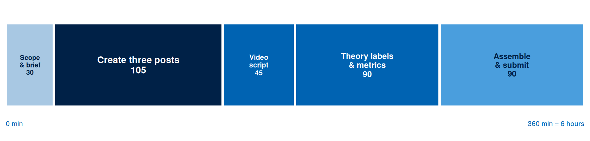

Week 8 Independent Study: Social Content Pack
Self-learning Social Content Pack
Investigation
1 Scope & Brief
⏱ 30 min
Define platform, audience, and goal.
Production
2 Create Three Posts
⏱ 105 min
Draft three posts with visuals or mockups, covering at least two tactics.
Production
3 Video Script
⏱ 45 min
Write a 45 to 60 second script with a shot list.
Production
4 Theory Labels & Metrics
⏱ 90 min
Label TAM and SIP choices; specify primary and diagnostic metrics.
Assessment
5 Assemble & Submit
⏱ 90 min
Build the PDF or ZIP; upload to Moodle; confirm receipt.
Your six hours this week produce a content pack: three finished posts, a video script, and the theory and metric labelling that lets a reader see why each decision was made. The tutorial gave you a plan. This turns three rows of that plan into artefacts someone could publish.
Activity 1: Scope and Brief (30 minutes)
Write a brief of roughly 150 words fixing three things, so every later decision has something to answer to.
Platform. One primary platform for the pack, taken from your tutorial plan. Three posts on one platform beat three posts scattered across three, because the pack has to demonstrate a coherent voice.
Audience. The segment from your Week 2 canvas, described by what they are doing when the post reaches them. “Visiting divers” is a label. “Visiting divers checking their phone on the boat between dives, on hotel wifi, sound off” is a brief.
Goal. One outcome for the week, expressed as a metric with a number attached and an [ASSUMPTION] label where the number is a guess.
Activity 2: Create Three Posts (105 minutes)
Produce three finished posts for the primary platform. Finished means the caption is written to its final word and the visual exists as an image, so a reader sees what the audience would see.
Your three posts must cover at least two tactics. The tactics available to you are: evidence (a claim with its external proof shown), utility (something the audience can use whether or not they ever buy), community (an invitation to answer, contribute, or be featured), and offer (a direct call to buy or enquire). A pack of three evidence posts fails this requirement.
Build the visuals in Penpot from Week 3, or photograph a real mock-up, or export a preview from Meta Creative Hub where your account allows it. The specification you recorded in tutorial Activity 2 governs the dimensions, and the character limits you noted govern the caption.
Each post needs: the visual, the caption exactly as it would publish including hashtags and any #ad disclosure, the tactic it uses, and the character count of the caption written beside it. Count the characters in a word processor or a browser counter, and write the number you measured.
Activity 3: Video Script (45 minutes)
Write one script for a 45 to 60 second video, with a shot list. The script is written even where you never film it: this is a production document, and the discipline is in making every second accountable.
At natural speaking pace a 45 to 60 second video runs to roughly 110 to 150 spoken words. Write to that budget and count your words.
Your script needs three columns: the timecode, what is on screen, and what is said or captioned. Reefkind’s script runs to 135 words of narration across 55 seconds, a natural speaking pace of about 2.5 words a second.
| Time | Shot | Narration and on-screen text |
|---|---|---|
| 0:00-0:05 | Close on the tube, thumb turning it to the ingredient panel | “Every sunscreen in this shop says reef-safe. Two of them actually mean it.” |
| 0:05-0:18 | Ingredient panel fills frame, finger tracks down the list | “Here is how you check in ten seconds, without trusting the front of the bottle at all. Turn the tube over and find the active ingredients panel on the back.” |
| 0:18-0:32 | Split frame: two ingredient panels side by side, one highlighted red | “Oxybenzone and octinoxate are the two filters that bleach coral. If either one appears on that list, put the bottle back on the shelf. Ours lists zinc oxide, and that single mineral does all of the filtering.” |
| 0:32-0:45 | Dated lab certificate held beside the tube, both in focus | “This is our lab test, dated March, from an accredited testing house in Colombo. The batch number printed on the certificate matches the batch number stamped on the tube you are holding.” |
| 0:45-0:55 | Wide shot, reef shallows, product resting on the boat rail | “So read the panel. On ours, and on every brand you buy from here on. Ten seconds, and the reef keeps its colour.” |
Two rules the script above follows, and yours should too. The claim arrives inside the first five seconds, because a feed viewer who waits for a build-up has already scrolled. And every word works with the sound off, since the narration doubles as burned-in caption text.
Activity 4: Theory Labels and Metrics (90 minutes)
Go back through the pack and label the reasoning. This is where a content pack becomes a defensible piece of work.
Label the TAM choice for each of the three posts and the video. Name which belief the artefact addresses (ease, usefulness, or trust) and the specific element carrying that work. Reefkind’s video is labelled TRUST: dated third-party certificate with matching batch number, held in frame and readable.
Label the SIP choice for the pack as a whole. State your reply plan: who answers, inside what window, and what a good reply looks like. Write one example reply to a hostile comment and one to a genuine question, because the hostile case is where accounts damage themselves.
Specify metrics. Name one primary metric for the pack and two diagnostic metrics. The primary metric maps to the goal in your brief. The diagnostics explain a miss: if saves come in under target, the diagnostics should tell you whether too few people saw the post or too few of those who saw it cared.
Label every number as evidence-based, inferred, or assumed. A target save rate carried over from a blog post about a different industry is inferred at best, and saying so is worth more than a confident figure with no source.
Activity 5: Assemble and Submit (90 minutes)
Assemble the pack in this order: brief, three posts with visuals and captions, video script with shot list, theory labels, metric specification, AI prompt log, and reference list. Export as a single PDF, or a ZIP where your image files need to stay separate.
Include an AI prompt log with at least two prompts, showing what you asked, what came back, and what you changed. A pack with AI-assisted captions and no log is returned for resubmission.
Upload W08_[YourName]_ContentPack.pdf to Moodle and confirm the receipt appears. This activity carries 3 formative marks.
Formative Checklist
| Criterion | Check |
|---|---|
| Brief | Platform, audience, and goal are fixed in roughly 150 words, with the goal carrying a number and an assumption label where the number is a guess |
| Three posts | Three posts are finished: final caption text and a visual that exists as an image |
| Two tactics | The three posts cover at least two of evidence, utility, community, and offer |
| Visuals | Visuals match the dimensions recorded from the live platform specification in tutorial Activity 2 |
| Character counts | Each caption carries a measured character count that satisfies the platform limit recorded in the tutorial |
| Video script | The script runs 45 to 60 seconds, with narration between 110 and 150 words, and the claim lands inside the first five seconds |
| Shot list | The shot list gives a timecode, a shot description, and narration for every segment |
| TAM labels | Each post and the video names the belief it addresses (ease, usefulness, or trust) and the element carrying it |
| SIP plan | The reply plan names who answers, inside what window, with a worked reply to a question and to a hostile comment |
| Metrics | One primary and two diagnostic metrics are named, each labelled evidence-based, inferred, or assumed |
| AI log | At least two prompts are logged with the output received and the change made |
| Presentation | Single PDF or ZIP, correctly named, citations present, receipt confirmed |
Review Questions
- A brand has run the same three posts a week for eight months and holds a small, highly responsive following. A competitor with ten times the budget launches this month. Using Social Information Processing theory, explain what the incumbent holds that the budget struggles to buy.
- A campaign’s problem is trust, and the team responds by simplifying the checkout from four steps to two. Conversion moves very little. Explain the diagnosis error using the Technology Acceptance Model.
- A post earns 40,000 impressions, 900 likes, 6 saves, and 2 replies. A second earns 3,000 impressions, 80 likes, 140 saves, and 31 replies. Which is the better result for a Preference-stage objective, and what does the engagement quality lens tell you that the impression count hides?
- A creator is given free product and posts a review with no label. Name the obligation that has been missed, who carries it, and where the disclosure belongs in the post.
- A team moves its best-performing 16:9 YouTube asset straight into Instagram Stories and reach collapses. Give two format-level explanations drawn from the specifications you read this week.
- A plan schedules seven posts a week for a two-person team with no reply time allocated. Using Social Information Processing theory, explain the cost of that choice and propose a cadence you could defend.
- Your primary metric is saves and the week comes in 60 per cent under target. Name two diagnostic metrics that would separate a distribution problem from a creative problem, and say what each result would tell you.
- A student’s pack includes a testimonial written by an AI using a plausible invented name. Give two distinct reasons this fails, one about evidence and one about disclosure.
TipWeek 8 at a glance
This week replaced platform folklore with two theories that survive an interface redesign. The Technology Acceptance Model tells you which barrier is actually blocking your audience, so the budget goes where the resistance is: ease, usefulness, or trust. Social Information Processing explains why the account that has been answering questions well for six months outperforms the one that arrived with a bigger production budget, and why reply time belongs in the plan alongside the shoot. Both feed Week 9, where the audience has already consented to hear from you and the relationship moves into the inbox.
Key Takeaways
Social platforms sell attention before they sell anything else, and the two theories this week give you a way to earn it that outlives any particular format. Name the belief blocking your audience, and put your evidence, your simplification, or your utility exactly there. Treat reply time as production time, because relational depth accumulates through exchange and no single asset shortcuts it.
The pack you built is the first genuinely finished creative artefact of the module: captions written to their final word, visuals at real specification, a script accountable second by second. Weeks 6 and 7 planned; this week you produced.
In Week 9 the channel changes and the relationship deepens. Email and mobile messaging reach an audience that has consented, which raises what you owe them: relevance, restraint, and a way out. The social pack you made this week is how that consented audience is built in the first place.